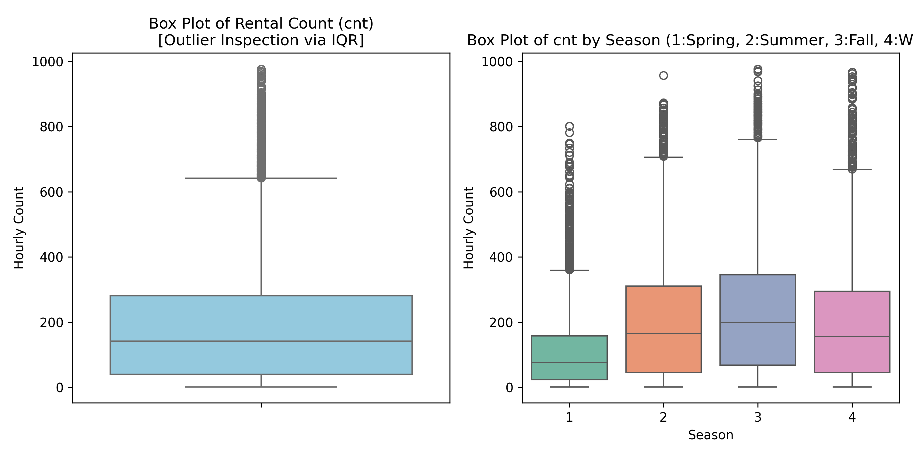
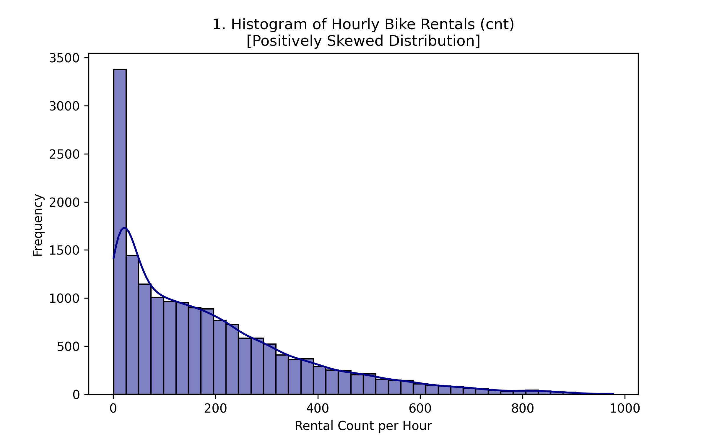
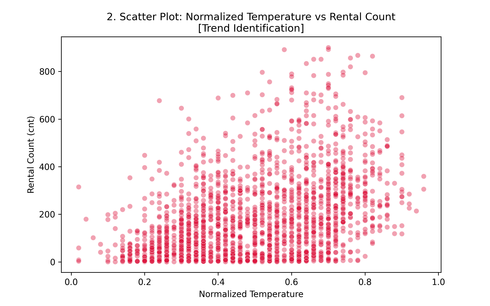
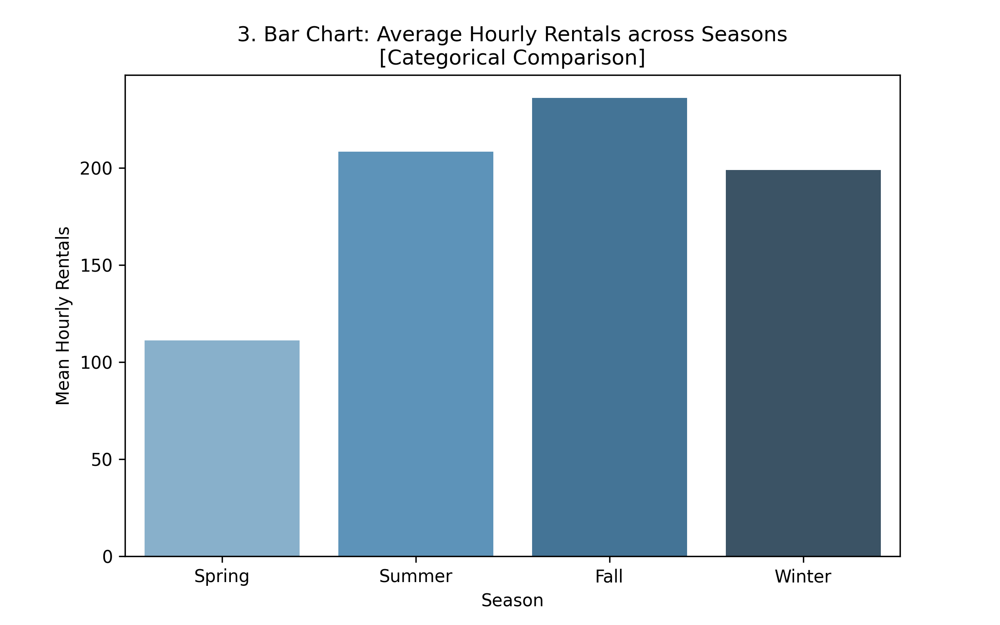
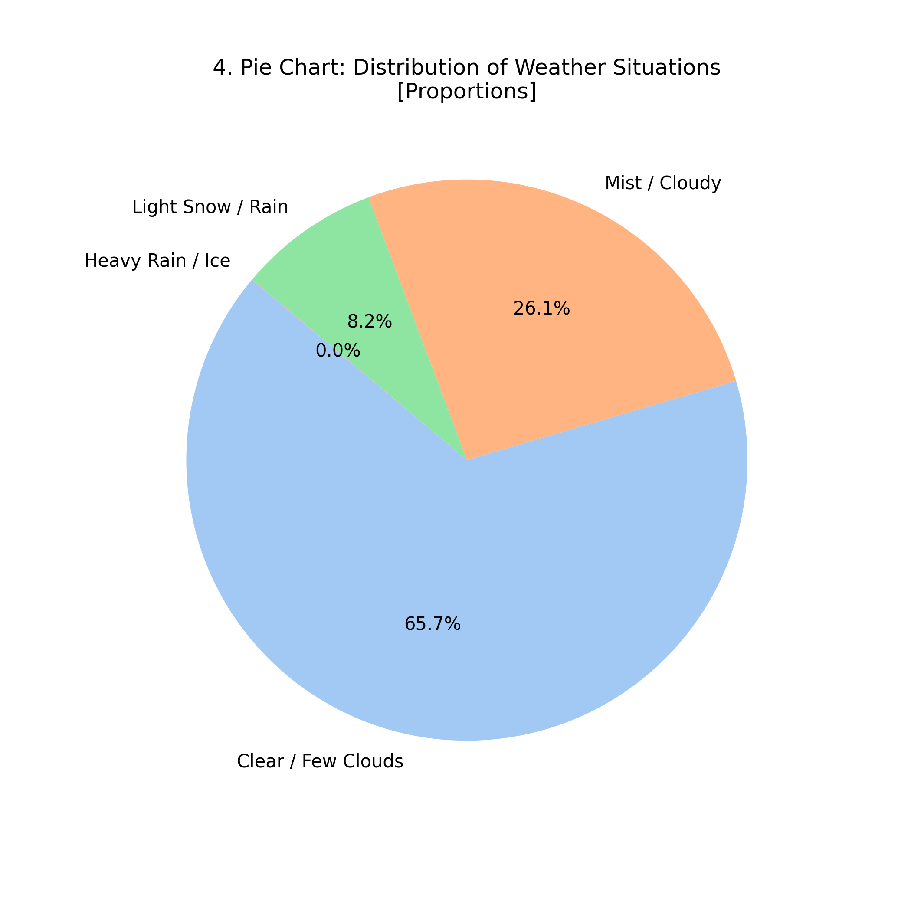
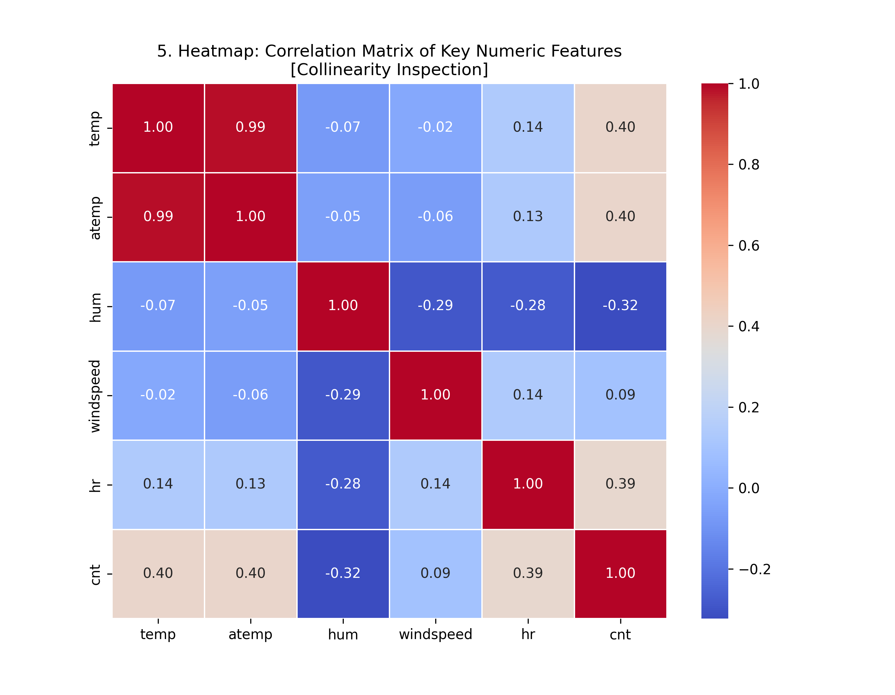
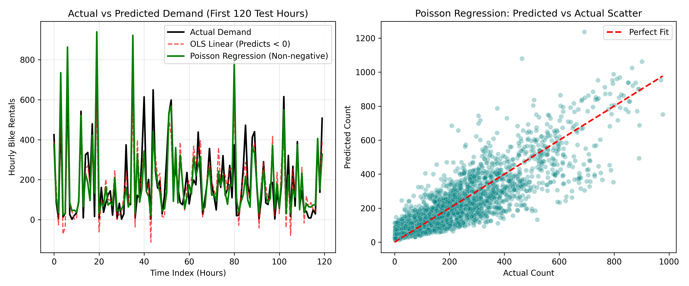

Real-Time Hourly Demand Calculator
Computes $\hat{y} = \exp(X\beta)$ using trained Poisson parameters with zero negative predictions.
1. Time & Commuting
2. Weather Conditions
3. Season & Atmosphere
Model Comparison & Validation Benchmark
| Predictive Model | Test RMSE | Test MAE | $R^2$ Score | Negative Predictions | Status / Evaluation |
|---|---|---|---|---|---|
| 1. Linear Regression (OLS Baseline) | 92.767 | 69.937 | 0.728 | 324 Invalid | Violates Non-negativity |
| 2. Poisson Regression | 88.698 | 63.065 | 0.752 | 0 (Valid) | Log-Link Enforced |
| 3. Negative Binomial Regression | 152.036 | 88.076 | 0.270 | 0 (Valid) | Overdispersion ($\alpha=0.5$) |
| 4. Tuned Poisson (GridSearchCV α=5.0) | 87.836 | 62.302 | 0.758 | 0 (Valid) | Best Model |
Analytical Visualizations Gallery
Generated directly by the Python analytical pipeline with Matplotlib and Seaborn.

Box plots detecting 505 rush-hour upper outliers exceeding the $1.5 \times \text{IQR}$ threshold ($642.5$).

Positively skewed distribution proving why count regression is required instead of Gaussian assumptions.

Non-linear relationship between temperature and rental demand highlighting ideal weather sweet-spots.

Average rental volume across Spring, Summer, Fall, and Winter illustrating strong seasonal variation.

Percentage distribution of weather conditions (65.8% Clear/Few Clouds, 26.1% Mist, 8.1% Precip).

Correlation matrix identifying temperature as a strong positive driver and humidity as a negative driver.

Time-series overlay displaying the 120-hour test window. OLS drops below 0 during late night hours, whereas Poisson smoothly hugs zero without negative values.